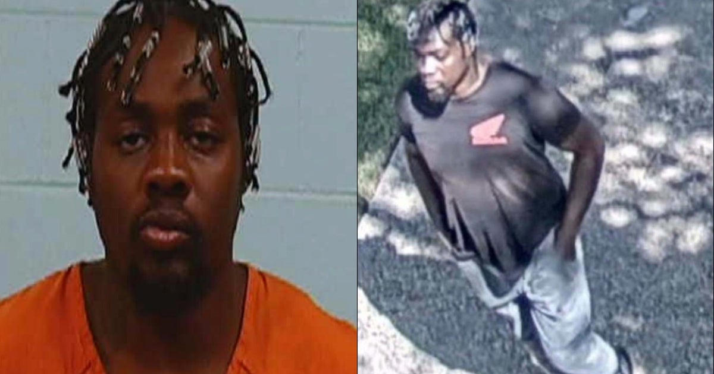

Time on the bench
3 min
Wimsatt sat at 10:55 a.m. The attack started about 10:58. He was dead before 11:15.
Prior relationship
None
Williamson County Sheriff: random act. The two men did not know each other.
Prior cases
3 / 3
Theft, theft, fake name. Public reports say all three were dismissed. Then first-degree murder.
What the cameras recorded
Labor Day, September 7, 2026. Chandler Creek. Near Double File Trail Elementary. A neighborhood park with a basketball court, a pool, a water fountain, and a bench.
Andrew James Wimsatt was 62. Civil engineer. Texas Department of Transportation and Texas A&M Transportation Institute work in his record. Nature and wildlife photographer. Devoted son. He had just come from visiting his mother in a nearby nursing home. Friends say he would walk with her, then walk alone. The second walk was the last one.
He sat down in a plaid blue button-up and shorts. Three minutes later he was dying.
A neighbor camera had already caught 26-year-old Benedict Chinedu Ogbodiegwu Jr. leaving a house two doors from the park, walking toward it with something in his left pocket that detectives said looked like a large knife sticking out. About 10:22 a.m. He stopped at the water fountain by the basketball court. Investigators later lifted a palm print there.
Then he found Wimsatt.
The HOA video is the record. He came from behind. He wrapped his left arm around the man. He drove the knife into his neck. Wimsatt tried to push him off. He could not. He was stabbed several more times and hit the ground.
Then the attacker walked around to the left side, knelt, put a knee on the dying man's chest, and kept going. The affidavit says he sawed the blade back and forth while it was inside the neck. That is not a fight. That is not a robbery that went sideways. That is a man enjoying the work of ending another man.
He wiped the blade on his shirt and jogged toward the pool. Four minutes after he left the park, the same neighbor camera caught him walking home.

The lie after the act
That afternoon he showed up at a McDonald's on E. Palm Valley Boulevard in different clothes. Video at 1:54 p.m. He left as a passenger in a red SUV. The plate went back to his father's house, about nine-tenths of a mile from the bench.
Detectives showed him a still from the crime-scene video. He said it was him. Then he said he was never at the park. Then he said he has a twin. Asked for the twin's name, he had nothing.
Deputies found a white trash bag in an outdoor can by the garage. Inside: the Honda shirt from the murder scene, grey sweatpants with red stains, size 12 Jordans, and a 5.5-inch knife with a wooden handle. The red substance on the blade tested presumptive positive for human blood.
He is charged with first-degree murder. Bail set at $1 million. A mental health assessment was ordered. He is not convicted yet. The cameras do not need a jury to tell you what they recorded.
The man who sat down
Andrew James Wimsatt
62. Austin. Civil engineer. Published pavement and infrastructure work. Punk rock, mid-century design, wildlife photographs. He clipped segments for the Gutfeld show when it was still once a week. He flew to tapings. He took care of his mother. Greg Gutfeld called him supremely gentle, willing to do just about anything for another person.
That is the target selection. Not a rival. Not a debt. A gentle man on a bench after seeing his mother.
The revolving door before the knife
Public reporting on the accused:
- 2017: theft, state jail felony. Dismissed.
- January 2026: theft. Court ordered a competency evaluation. Reports say he was committed for restoration in February. The May competency hearing was canceled. The theft charge was dismissed April 7.
- May 2026: giving police a fake name. Dismissed.
Three cases. Three dismissals. Then a stranger on a bench with his throat being sawed.
Soft language is how this species survives. "Mental health." "Random." "Isolated." "Troubled young man." Those words are sometimes true and still useless. A competency file did not stop the walk to the park. A dismissed theft did not stop the knife in the pocket. A fake name case that vanished did not stop the knee on a dying chest.
Call the act what it is. Sadism. Domestic. Criminal. Aimed at a civilian who had no chance. If you need a cleaner word than terrorist for a man who hunts a stranger in a public park and tries to take his head off, you are protecting the hunter.
This is not Texas-only
On August 3, 2026, a man took a hatchet to another man at Belmont and Effie. Zero-point-eight miles from the door on La Sierra. On August 20, Dustin Crawford walked into Courthouse Park and stabbed a senior Fresno County deputy district attorney three times in the back. Officials called that one targeted. The Round Rock case is being called random. The difference is motive paperwork. The method is the same family: a blade, a public place, a human being treated as meat.
The High Tower District was not built as a brand. It was built because the city will not say the word evil when evil is standing at the fountain. Parks, canals, benches, bus stops, the sidewalk in front of a school. That is the hunting ground. If you live here you already know the walk. You already know which block you do not sit on.
Good and evil, without the press release
There is a habit in city rooms and city halls of treating a slaughter like weather. A low-pressure system moved through the park. Tragedy occurred. Thoughts are with the family.
No. A man chose a victim who could not fight him off. He closed the distance from behind. He used the neck because the neck ends the argument. He stayed after the man was down and worked the blade. Then he changed clothes and ordered food.
Good is the engineer who builds roads, visits his mother, takes pictures of birds, and sits in the sun. Evil is the man who decides that life is available to cut. The space between them is not a policy seminar. It is a blade and a bench.
Fresno will keep producing the same scene until the people who run the place admit the species. Not "unhoused neighbors." Not "a mental health moment." Not "youth who need wraparound services" after the third dismissed case. A domestic criminal sadist who treats public space as a kill floor.
Clean the city the way you clean a wound. Name the infection. Stop pretending the park bench is holy ground. It is only as safe as the last man who walked up behind it.
Sources
- Williamson County Sheriff's Office public updates, Sept. 7–9, 2026. Victim identified as Andrew James Wimsatt, 62, of Austin. Suspect identified as Benedict Ogbodiegwu Jr., 26, of Round Rock. Charged with murder. Attack described as random. The two men were not known to one another.
- Arrest affidavit as reported by FOX 7 Austin, Austin American-Statesman, and KVUE, Sept. 9–10, 2026. Timeline, HOA video, water-fountain print, McDonald's video, red SUV, trash-bag evidence, 5.5-inch wooden-handle knife, presumptive blood test, twin claim.
- Statesman, Sept. 10, 2026: $1 million bail, mental health assessment ordered.
- Public case history compiled in contemporaneous reporting: 2017 theft dismissed; January 2026 theft with competency track, dismissed April 7; May 2026 false identification, dismissed.
- Lawrence Person, BattleSwarm, Sept. 10, 2026. Personal tribute: TxDOT/TTI career, nursing-home visits, Gutfeld and We the Fifth orbit.
- Texas A&M Scholars record for Andrew J. Wimsatt, TTI research engineer, civil engineering degrees from UT Austin.
- High Tower District record: hatchet attack at Belmont and Effie, Aug. 3, 2026; Courthouse Park knife attack on a senior DDA, Aug. 20, 2026.
This page is an opinion from the High Tower District attached to a public record. It is not a verdict. Ogbodiegwu is charged, not convicted. The video and the trash bag are what they are.
Closing
If a bench in a school-adjacent park is a free-fire zone, the city has already surrendered.
Wimsatt sat down after seeing his mother. That should have been the whole story. In Fresno the same story is already local. Do not wait for the next three minutes.